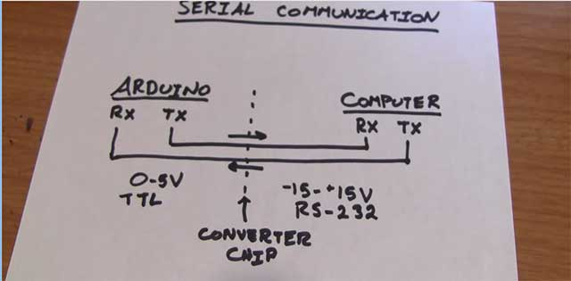
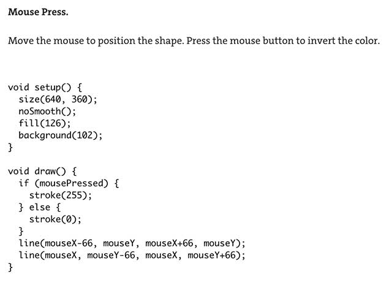
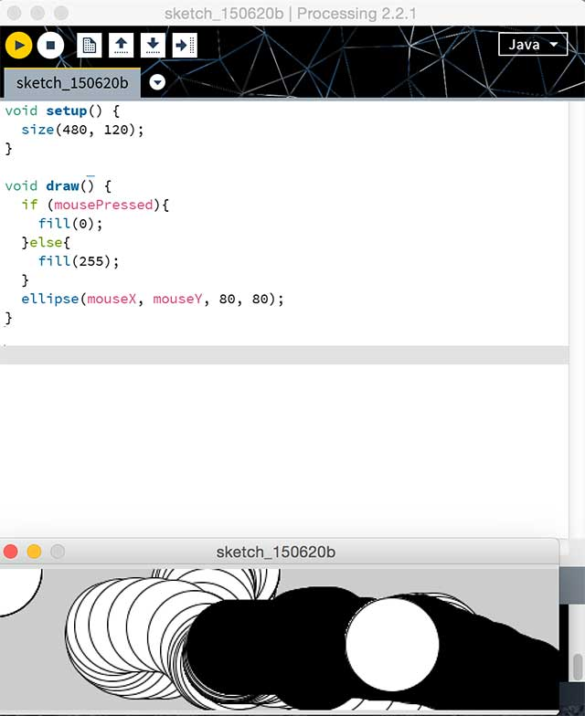
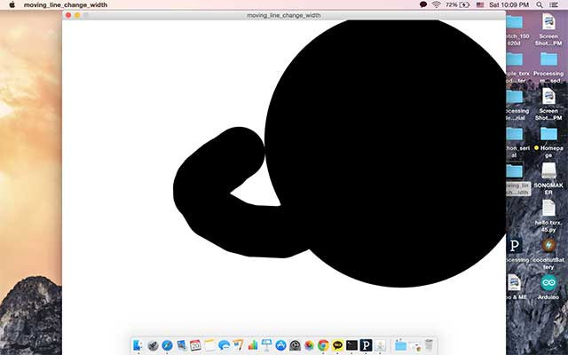
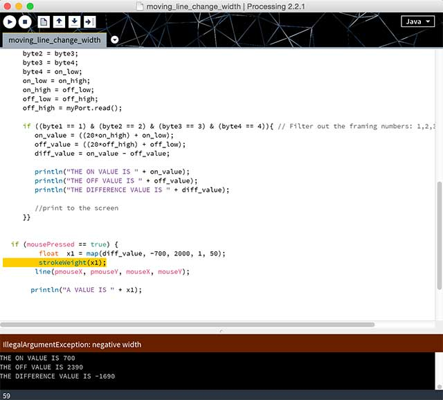
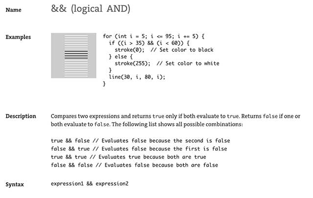
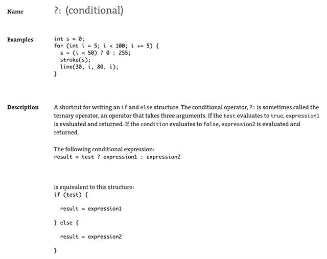
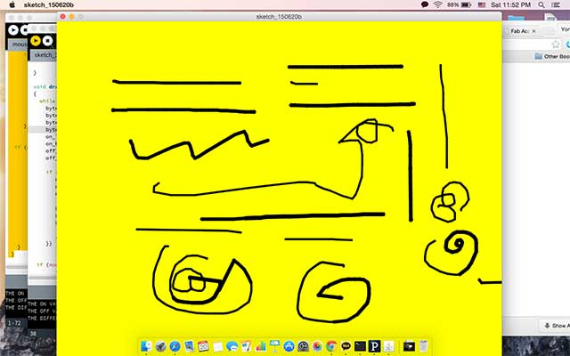
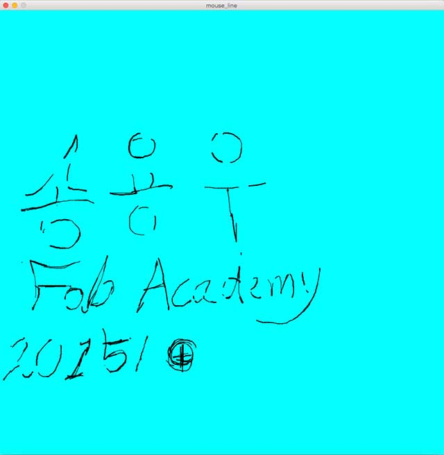

14. Interface and Application Programming
write and application that interfaces with an input/output device
This is my first time doing processing and by the looks of something can be easily done with little bit of learning the code. However, I learned from the past experience that it’s better to look over references of other’s work and modify it.
My special thanks to Gabriella Gardosi whom i met in Barcelona when i was in trip. she did some magnificent work which I had huge amount of help
However in the beginning, by looking at the the simple tutorial from processing official site I’m learning how the processing works. My first example was to make moving circle and when mouse button is clicked the circle is turned into black. I try to use my mouse button as making the circle to move in the direction that I want, and for the size of a circle I’d like to try my txrx board.
 |
 |
 |
SERIAL COMMUNICATION CONCEPT |
MOUSEPRESS() , TEST |
CIRCLE MOVING EXAMPLE |
I had to learn the concept of processing since my last trial the computer just froze and did nothing. So I needed to learn how processing is different from arduino.
Obviously I thought of the process too complex at first, all I needed to do is to set variable and make certain background what I call the 'working space' and in void draw() statement , I call the serial input and set the usbtiny destination by [ myPort = new Serial(this, "/dev/tty.usbserial-A603UEXU", 9600); ] // on Windows the statement after tty is differently shown like COM.
transmit is hooked up with receiver and same happens with vice versa. serial communication often happens between -15 ~ +15 volts. Basic knowledge quickly learned from youtube tutorial.
Frozen? why ?
 |
 |
NOT STABLE TXRX |
ERROR MSG : NEGATIVE WIDTH |
Quick try with the code downloaded, of course there is a problem. I didn’t expect to have no problem. I looked closely at the coding of processing and by the looks of it because my values are jumping when touched with both hands. it creates a negative value which the stroke can not be made. (“ error message : negative width “) stop the application
 |
 |
LOGICAL STATEMENT |
CONDITIONAL STATEMENT |
Looking closely at the coding of past work. I sensed there are lines for making subtraction in on_value and off_value. I looked at the description of statement and I realized that if change the if statement I can temporarily fix the problem
before :
if ((mousePressed == true) {
float x1 = map(diff_value, 0, 10000, 1, 100);
strokeWeight(x1);
line(pmouseX, pmouseY, mouseX, mouseY);
println("A VALUE IS " + x1);
after :
if ((mousePressed == true) && (diff_value > 0)) {
float x1 = map(diff_value, 0, 10000, 1, 100);
strokeWeight(x1);
line(pmouseX, pmouseY, mouseX, mouseY);
println("A VALUE IS " + x1);
 |
 |
VARYING STROKE WEIGHT (DOING TESTING) |
DRAWING WRITING WITH MOUSE(WITH FIXED CODE) |
What I learned …
First, when I installed processing I didn’t know how to work even with simple code of serial importing. Now i know that It’s just another tool just like Arduino to do something with visual thing. Understanding how to define variables for later on usage for subtraction I got lucky to get some good example for coding. I Stll got some problem with not properly making with smooth lines and I'll be looking more at codes to solve problem with coding. However, It's my instinct that I there are some limitation to fix the problem I guess my problem must be fixed in input device beforehands
Download files
Mouse_line
PDE : mouse_line (processing file)